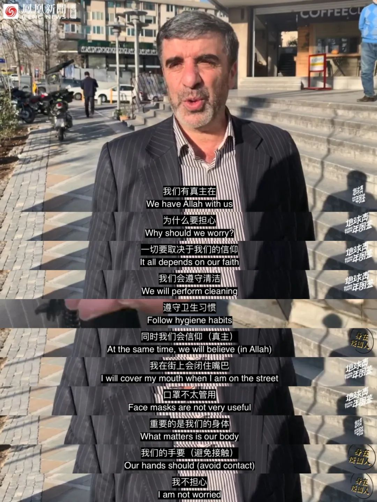
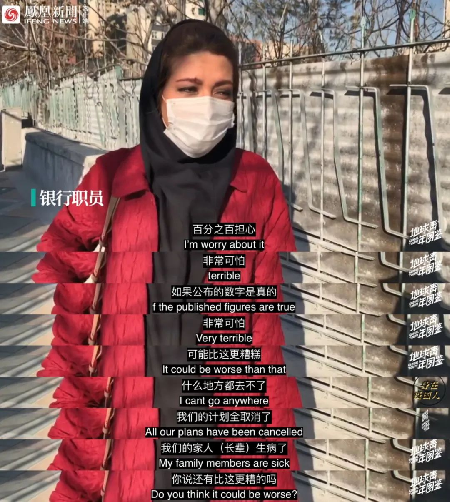
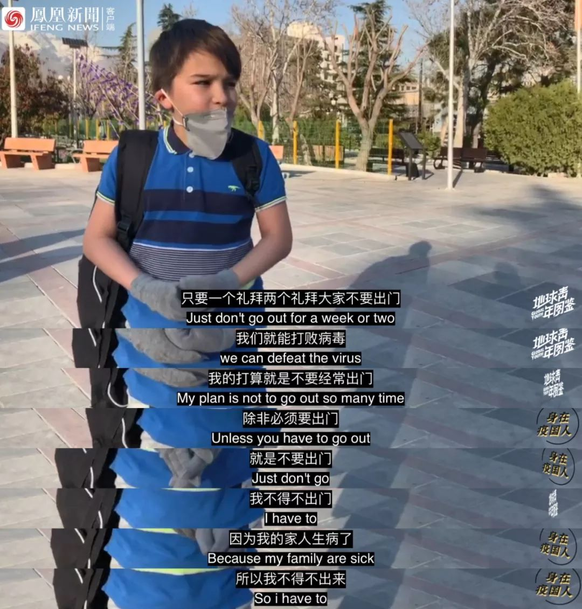
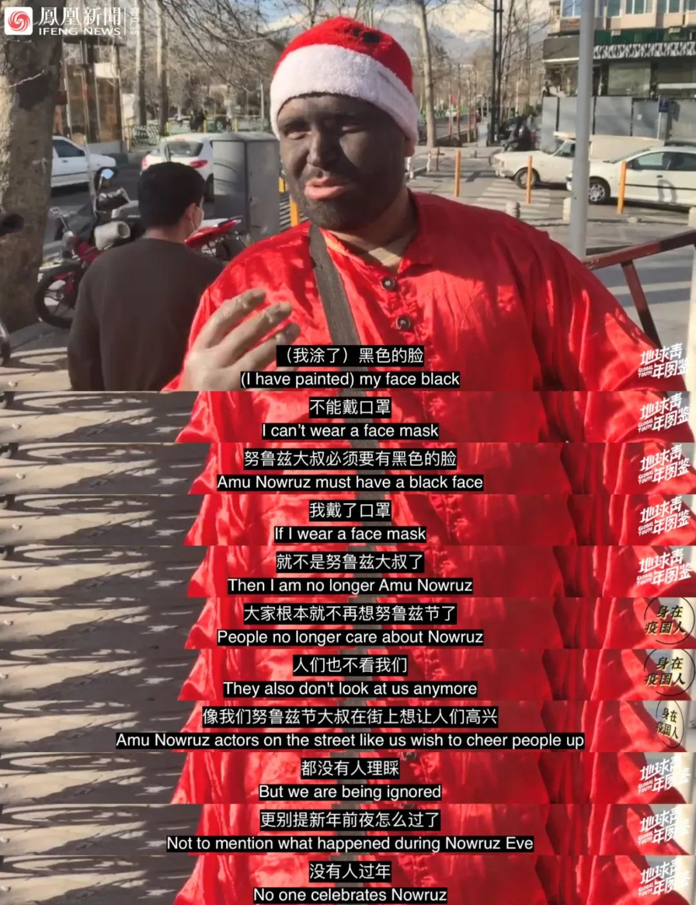

我在海外 | 加拿大蒙特利尔只有一家诊所能筛查新冠病毒
原文链接 备份链接 曾经被人羡慕着可以搭乘撤侨飞机回到安全地的加拿大人，怎么也不会想到，有一天，我们也要经历停课、所有公共场所强制关闭、抢购、缺货的生活。 文 | 艾琳 一个月前，谁都没有想到，我们这也会经历这样的乱世。 3月12日，我 …
以下文章来源于地球青年图鉴 ，作者地青


根据伊朗卫生部最新消息，截至3月16日中午，伊朗累计确诊新冠肺炎病例14991例，其中4996例康复，853例死亡。
为遏制疫情发展，尽早发现疑似感染的病例，伊朗本月初宣布启动国家动员计划，将陆续向全国各地派出30万个医疗小组逐户排查疫情。
据伊朗伊斯兰共和国通讯社报道，伊朗卫生部副部长阿里雷扎·雷西3月15日表示，截至当天伊朗启动的国家动员计划完成了1000万人的疫情排查工作。排查后，发现有21万人出现了至少一种疑似症状。
当地时间3月10日至15日，凤凰卫视驻伊朗记者李睿走上德黑兰街头，询问当地人对疫情的看法。
| 公务员：“我们有真主在，为什么要担心？”

| 公司职员：“人们不会戴（口罩），因为太贵了”

*| 银行职员：”我的家人生病了，还有比这更糟的吗”*

| 家庭主妇：“宣传要做的事情我都做，其他就由真主抉择吧”

| 服役士兵：“我只想回家，现在糟糕极了”

*| 小孩：“我的家人生病了，我不得不出来”*

| 街头艺人：“我们总是赤手空拳应付一切”

| 街头艺人：“大家根本就不再想努鲁兹节（伊朗新年）了，没有人过年”

(部分文字来源：央视新闻、文汇报)
本篇为地球青年图鉴“身在疫国人”第5期伊朗篇，后续将带来更多“海外疫国”的报道，请持续关注。
更多内容，请查看视频。


新型肺炎疫情牵动人心，
《在人间》现面向全国网友征稿：
（一） 疫区影像日记
如果你身处疫区
请你用照片（视频）和文字记录
你所听闻和见到的一切
照片不少于3张
文字不少于300字
投稿方式：微信联系人间君（zairenjianliving）
（二）抗击疫情真实故事
无论你是一线医护人员、志愿者、
确诊或疑似患者及家属、已治愈出院人士等等，
如果希望讲述疫情相关经历，
请微信联系人间君（zairenjianliving）

原文链接 备份链接 曾经被人羡慕着可以搭乘撤侨飞机回到安全地的加拿大人，怎么也不会想到，有一天，我们也要经历停课、所有公共场所强制关闭、抢购、缺货的生活。 文 | 艾琳 一个月前，谁都没有想到，我们这也会经历这样的乱世。 3月12日，我 …
原文链接 备份链接 中国现有确诊病例已降至1万以下。国内已采取最严密的入境防疫检测措施。美国继续在快车道上狂奔，但基本防疫措施已经得到重视和加强 文丨《财经》数据研究员 徐进 图丨《财经》视觉中心 编辑丨郝洲 一、境外输入病例北京居首， …
原文链接 备份链接 隔离在伊朗的日子 口述 | 孙建龙 采访、文 | 杨溪 1 当地时间3月5日上午十点半，我的一位伊朗朋友在德黑兰南部汽车站等待巴士，准备前往另一座城市伊斯法罕。 人比以往少了许多。他看到一支车队浩浩荡荡赶到汽车站，皮卡 …
原文链接 备份链接 随着新冠肺炎疫情的蔓延，在过去的一天，韩国、意大利、伊朗等多国新增确诊数继续上升，中国以外累计确诊病例超过15000例。 世卫组织：部分国家对新冠肺炎准备不足 当地时间3月5日，世卫组织在日内瓦召开新冠肺炎疫情例行发 …
原文链接 备份链接 编者按 本文是作者自2月21日至3月1日在伊朗首都德黑兰写下的生活日记。 对比其他国家，伊朗异常紧张的国际处境、多年制裁下脆弱的经济和深入到社会生活方方面面的宗教传统，都影响着它面对疫情的态度。从2月20日晚间伊朗首次 …